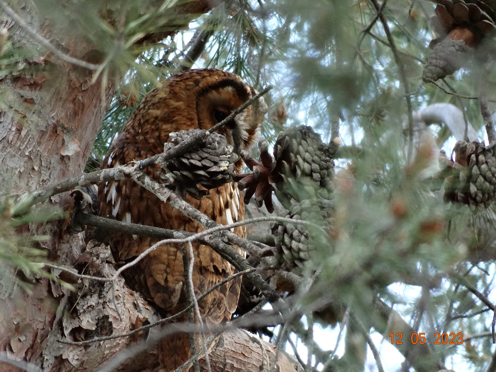

SCIENCE COMMUNICATION · DIVULGACIÓN
Curiosity is contagious.
Science is meant to be shared.
Nature has fascinated me for as long as I can remember. Here are some of the stories, conversations and public events through which I have been fortunate enough to share that fascination with others.
NATURE STORIES
A window into the wild
Watching a wild animal up close can spark a lasting fascination with the living world.

TAWNY OWLS · SEO/BIRDLIFE COLLABORATION
The tawny owls in my garden
A homemade nest box became a window into the private lives of a tawny owl family. I later collaborated with SEO/BirdLife to share footage from the nest cameras.
▶
LIVE RECORDING · 2025Tawny owl ringing, live
Watch the 2025 live broadcast of the tawny owl ringing session.
Watch on YouTube ↗
ON AIR
Podcasts & television
Conversations and reports that bring ecology out of the laboratory and into everyday life.
PODCAST · EPISODE 48♫
Composting and the life beneath our feet
A conversation on composting, organic matter and the biological processes that make compost possible.
Cascando de Ciencia · iVoox
Listen to the podcast ↗
TELEVISION · 2021▶
The European honey-buzzard against the Asian hornet
A television report from Galicia on the native honey-buzzard and its relationship with the invasive yellow-legged hornet.
Labranza · TVG · 25 September 2021
Watch the report ↗
RADIO · 2020♫
Talking science on national radio
A conversation about FameLab and communicating science on the radio.
Las mañanas de RNE · RTVE
Listen on RTVE ↗
RESEARCH IN THE NEWS
Beyond the scientific paper
Press coverage of research on native predators, biological invasions and the ecological role of the European honey-buzzard.
Articles may be in Spanish or Galician. External pages are maintained by their respective publishers.
SCIENCE ON STAGE
FameLab & interviews
Science communication is also about curiosity, humour and finding a way to connect with people.
FAMELAB SPAIN · 2020In 2020, I was selected as one of the 12 FameLab Spain semifinalists. I used humour to share unexpected facts about insect reproductive strategies.
FECYT official announcement ↗
INTERVIEW · ELDIARIO.ES“ ”
Why use humour to communicate science?
On entertaining audiences, explaining scientific ideas and making research accessible beyond academia.
elDiario.es · De Ciencia
Read the interview ↗
INTERVIEW · ELECONOMISTA“ ”
Science can be enjoyable and fun
An interview about why scientific knowledge can be both engaging and entertaining.
elEconomista · Ecoaula
Read the interview ↗
INTERVIEW · UNIVERSITY OF ALCALÁ“ ”
Scientific monologues as little sparks of curiosity
My reflections on public engagement, the performing arts and the stories behind a FameLab science monologue.
UAH · University communication portal
Read the interview ↗
MEETING THE PUBLIC
Public talks & events
Face-to-face science communication, from public talks to national events.
2022 30 September
EUROPEAN RESEARCHERS’ NIGHT · UNIVERSITY OF ALCALÁThe European honey-buzzard as an ally against the Asian hornet
A public talk at the University of Alcalá's Botanical Garden, part of its apiculture classroom programme.
See the UAH event programme ↗
2020 FameLab Spain
SCIENCE COMMUNICATION · FECYT & BRITISH COUNCILFameLab Spain semifinalist
Selected among the 12 semifinalists of the national science-monologue competition.
See the FECYT announcement ↗
LET'S KEEP SHARINGHave a science story to tell together?
I'm happy to discuss public talks, interviews and projects that help more people connect with nature.
Get in touch ↗